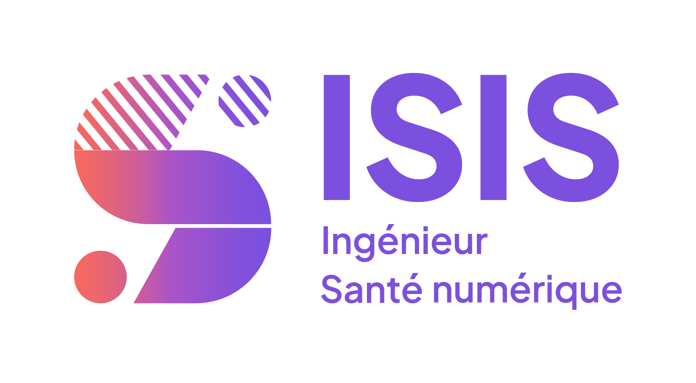
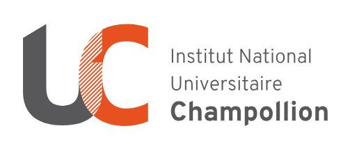
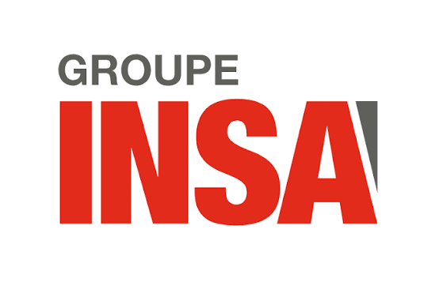
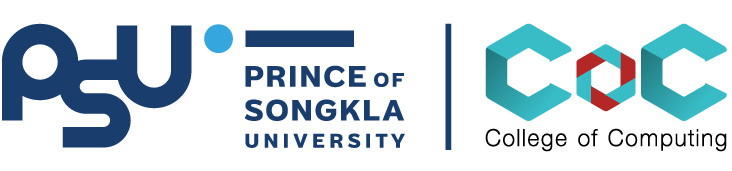

Développement & DevOps
Développement d'applications et déploiement de solutions techniques.
Étudiant ingénieur · Informatique & E-santé
Étudiant en dernière année (5e année) à ISIS Castres, en informatique spécialisé en Systèmes d'information en santé, et suivant un parcours d'approfondissement en Intelligence Artificielle. Je conçois des solutions logicielles et data pour améliorer les parcours de soins.

À propos
Je suis étudiant ingénieur en dernière année (5e année) à ISIS Castres, en informatique, spécialisé en Systèmes d'information en santé. Je suis par ailleurs un parcours d'approfondissement en Intelligence Artificielle, que je cherche à mettre au service de l'amélioration de la santé, des workflows hospitaliers et du quotidien des soignants.
Au travers de projets académiques et d'expériences professionnelles en milieu hospitalier, je développe une double compétence technique (développement, data, Python, architectures e-santé) et métier (IAM, SI hospitaliers, ergonomie des postes de travail).




Compétences
Développement d'applications et déploiement de solutions techniques.
Compréhension des architectures SI hospitalières et des workflows métier.
Approfondissement de modèles de Machine Learning appliqués à la santé.
Travail en équipe pluridisciplinaire et coordination en environnement hospitalier.
Projets
Une partie de mes projets académiques et personnels autour du développement web, de la data et de l'e-santé.
Rôle : Développeur principal
Participation à la Nuit de l'Info avec la réalisation d'une application web autour du thème « Village Numérique Résistant ». Conception de l'interface, intégration responsive et mise en place de fonctionnalités interactives.
Le projet met en avant la résilience numérique d'un village connecté, avec un souci d'ergonomie et d'accessibilité.
Rôle : Développeur Full-Stack (projet tutoré en équipe de 3)
Conception et développement d'une application web pour recenser et valoriser les films réalisés par les étudiants d'ISIS Castres dans le cadre de leurs cours d'anglais (projet « The Hospital »). Le site propose une interface publique de consultation des films (métadonnées, participants, anecdotes, commentaires) ainsi qu'un espace administrateur sécurisé pour gérer les contenus.
Du cahier des charges à la mise en production : analyse du besoin, maquettage Figma, modélisation de la base de données, développement d'une API REST documentée, puis déploiement conteneurisé avec CI/CD GitLab et orchestration Kubernetes.
Rôle : Développeur IA
Expériences
Avril – Juin 2025 · Castres (8 semaines)
Thématique : Systèmes d'information, IAM & infrastructure (DSI)
Janvier – Mai 2026 · Phuket, Thaïlande
Semestre d'échange académique · College of Computing (COC)
Stage PlaniTime – Juin–Septembre 2026 · Castres
Sujet : Serious game hybride pour la formation en soins infirmiers
Contact
Intéressé(e) par un stage, une collaboration autour de l'informatique en santé ou simplement envie d'échanger ? Laisse-moi un message.
Actuellement à la recherche d'un stage de fin d'études de 22 à 26 semaines, disponible à partir de janvier/février 2027. Je suis également ouvert aux opportunités de stage, alternance ou projets autour de l'informatique, de la data et de l'e-santé.
Étudiant ingénieur · Informatique & E-santé
Étudiant ingénieur en dernière année (5e année) à ISIS Castres, spécialisé en Systèmes d'information en santé et suivant un parcours d'approfondissement en Intelligence Artificielle. Je conçois des solutions logicielles et data au service de l'amélioration des parcours de soins et des workflows hospitaliers. À la recherche d'un stage de fin d'études de 22 à 26 semaines, disponible à partir de janvier/février 2027.
Nuit de l'Info 2024–2025
Application web collaborative réalisée lors de la Nuit de l'Info, autour du thème « Village Numérique Résistant » : interface responsive et fonctionnalités interactives.
The Hospital
Application de valorisation des productions vidéo étudiantes : interface publique, espace admin sécurisé, API REST et déploiement Kubernetes/CI-CD.
ALPOS – Grand Prix Sprint E-Santé
Reconnaissance de mauvaises postures pour les aides à domicile : modèles de Machine Learning entraînés sur des données de mouvement.
Stage – Systèmes d'information & IAM · CHIC Avril–Juin 2025 · Castres
Stage – Serious game PlaniTime · INU Champollion / ISIS Juin–Septembre 2026 · Castres
Diplôme d'ingénieur — Informatique & E-santé 2022–2027
ISIS Castres — parcours d'approfondissement en Intelligence Artificielle.
Mobilité internationale — Prince of Songkla University (PSU) Janvier–Mai 2026 · Phuket, Thaïlande
Semestre d'échange académique au College of Computing (COC) de la PSU — 19 crédits, dont Cloud Computing, Machine Learning et Computer Security.